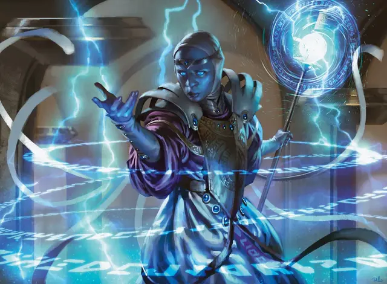

Маг предсказатель
Precognitive Mage
Средний Гуманоид (Любая раса), законно-нейтральный

Класс Доспеха 11 (14 с доспехом мага)
Хиты 63 (14к8)
Скорость 30 футов
| мод | спас | ||
|---|---|---|---|
| СИЛ | 9 | −1 | −1 |
| ЛОВ | 13 | +1 | +1 |
| ТЕЛ | 10 | +0 | +0 |
| мод | спас | ||
|---|---|---|---|
| ИНТ | 18 | +4 | +6 |
| МДР | 13 | +1 | +3 |
| ХАР | 11 | +0 | +0 |
Навыки Восприятие +3
Чувства истинное зрение 120 футов, пассивное Восприятие 13
Языки Общий плюс один другой язык
Опасность 3 (700 опыта)
Бонус мастерства +2
Особенности
Врожденное колдовство. Базовой характеристикой заклинаний мага является Интеллект (Сл спасброска от заклинания 14). Он может использовать следующие заклинания, без материальных компонентов:
• 3/день каждое: обнаружение мыслей [detect thoughts], доспехи мага [mage armor];
• 1/день каждое: подсматривание [clairvoyance], поиск предмета [locate object].
Действия
Боевой посох. . Рукопашная атака оружием: +1 к попаданию, досягаемость 5 фт., одна цель. Попадание: 2 (1к6 − 1) дробящего урона или 3 (1к8 − 1) дробящего урона, если используется двумя руками.
Взгляд на временной поток (перезарядка 5–6). Маг нацеливается на одно существо в пределах 120 футов от себя, которое он может видеть. Цель получает 18 (4к8) урона психической энергией и должна преуспеть в спасброске Интеллекта Сл 14, иначе станет ошеломлённой до конца своего следующего хода.
Описание
Маги предсказатели, редкость среди заклинателей Азориусов, способны улавливать проблески будущего. Обычно их используют для прогнозирования действий разыскиваемых преступников, помогая тем самым их поимке.
Гетра
Гетра - маг-предсказатель, впервые применивший свой дар на улицах Равники в качестве юной воровки. Еще будучи подростком, она была задержана, а затем помилована в обмен на согласие использовать свои таланты на службе у Сената Азориуса. Десятилетиями она работала почти в полной анонимности, а её дары не ценились. Но когда Сенат проявил повышенный интерес к талантам магов-предсказателей, Гитре дали более видную должность, которую она приняла с энтузиазмом. Она беспокоится о том, какое влияние оказывает ее гильдия на остальную Равнику, но в душе верит, что помогает людям. Хаос может только разрушать, а её видения - это инструмент для того, чтобы общество могло жить в безопасности во всех вариантах будущего.